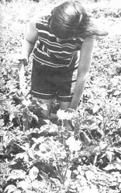

The potatoes we plant March 15, here in southeastern Nebraska, stand 30 inches tall at flowering time with foliage that spreads to produce a shade-mulch which conserves moisture during dry spells. Rows in this photo are 30 inches apart and plants are spaced 18 inches between in the rows. We begin harvesting good new potatoes—12 or more per hill—from plantings like this by early June. Rain provides the only moisture. We prepare the ground by tilling under corn stalks and leaves, the preceding autumn. Since we've found that we can "borrow" the ground for such a potato patch and pick up mulching material for the asking, our potatoes cost us very little indeed!